How-To Geek
How to Quickly Launch a Bash Shell From Windows 10’s File Explorer
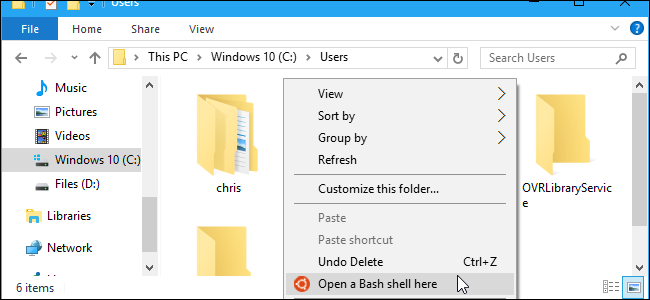
Launch Bash on Windows 10 and it will automatically open to your UNIX account’s home folder. Rather than using the cd command to change to another folder, you can launch Bash directly from a folder in File Explorer.
You can do this without any registry hacks or changes. It’s just hidden. But if you’re willing to dive into the registry, you can make it a little more convenient. Here are our two recommended methods.
The Easy Option: Use the Address Bar

When you want to launch bash at a specific folder, just navigate to that folder in File Explorer normally. Click the address bar while in that folder, type “bash”, and press Enter.
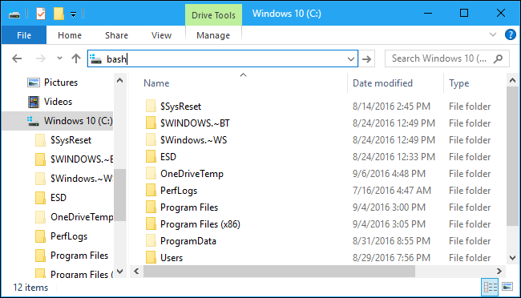
You’ll get a Bash prompt window focused in the folder you selected.
For example, if you type “bash” directly in the root of the C: drive, Bash will open with the directory /mnt/c selected.
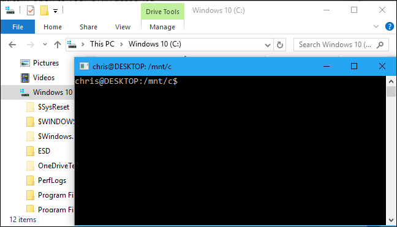
The Right-Click Option: Add a Context Menu Option by Editing the Registry
Perhaps you’d rather have a context menu option like the “Open command window here” option that appears when you hold Shift and right-click inside a folder in File Explorer.
To get this kind of Bash shortcut, you’ll need to edit the registry and add this feature yourself. If you’d rather not do this by hand, we have a quick .reg file you can run below instead.
Standard warning: The Registry Editor is a powerful tool and misusing it can render your system unstable or even inoperable. This is a pretty simple hack and as long as you stick to the instructions, you shouldn’t have any problems. That said, if you’ve never worked with it before, consider reading about how to use the Registry Editor before you get started. And definitely back up the Registry (and your computer!) before making changes.
First, open the registry editor by pressing the Windows key, typing “regedit” into the Start menu, and pressing “Enter”.
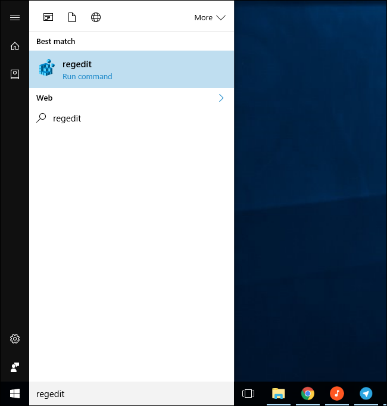
Navigate to the following key:
HKEY_CLASSES_ROOT\Directory\Background\shell
Right-click the “shell” key and select New > Key.
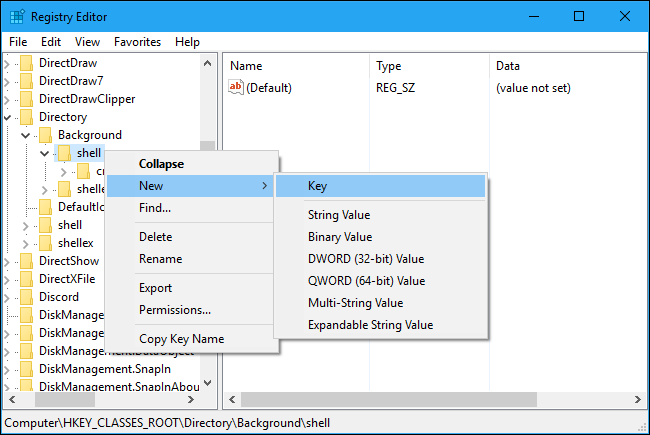
Name the key “bash” or something similar. You can name it anything you want. This name doesn’t appear in Windows anywhere, and is just used to keep track of the entry in the registry.
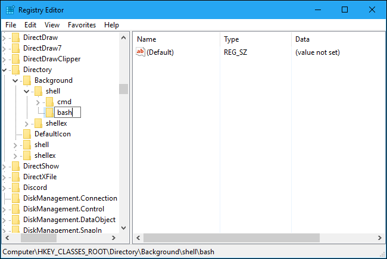
Select “bash” (or whatever you named the key) in the left pane.
Double-click “(Default)” in the right pane and enter whatever name you want to appear in File Explorer’s context menu. For example, you could enter “Open a Bash shell here” or just “Bash”.
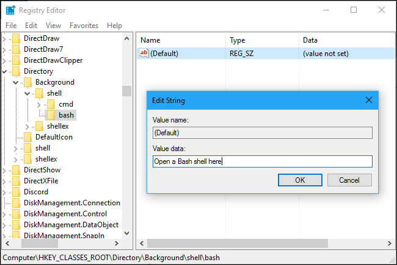
If you want the Bash entry to have an icon in File Explorer’s context menu, right-click the “bash” key and select New > String Value.
Name the value “Icon”, double-click it, and enter the following value:
%USERPROFILE%\AppData\Local\lxss\bash.ico
Skip this step and don’t create an “Icon” value at all if you don’t want an icon in the menu.
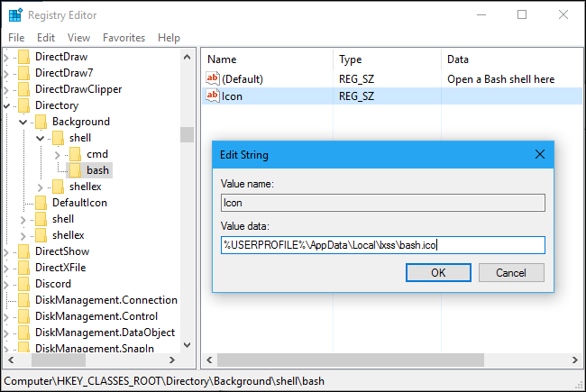
Next, right-click the “bash” key and select New > Key.
Name it “command”.
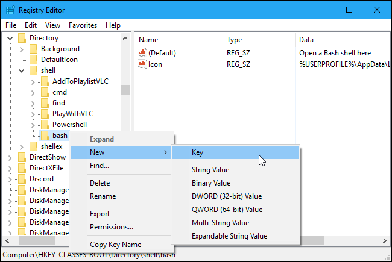
With the “command” key selected in the left pane, double-click “(Default)” in the right pane and enter the following value:
C:\Windows\System32\bash.exe
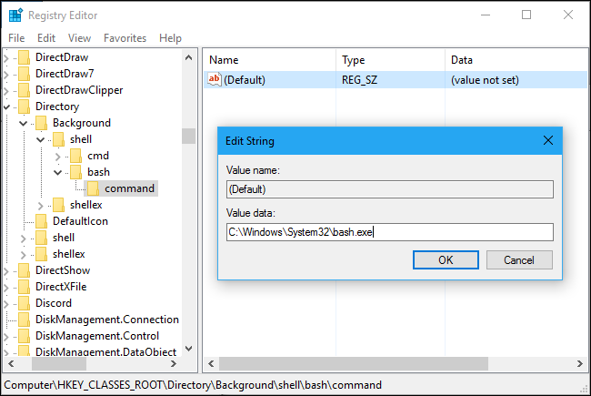
You’re done. You can now right-click a folder in File Explorer and select “Open a Bash shell here” (or whatever you named the option) to quickly open a Bash shell to that specific folder. This option will appear immediately, so you don’t have to sign out or reboot first.
Use Our One-Click Registry Hack
Rather than doing all the registry editing work above, you can download our one-click .reg file. It does the exact same thing the above registry hack does. If you decide you want to remove the option, we’ve also included a one-click .reg file that will quickly remove the option.
Download our one-click “Add Bash to Your Context Menu” registry hack and unzip the file. Double-click the “Add Bash to Your Context Menu.reg” file and agree to add the information to your registry to get the context menu option. Double-click the “Remove Bash From Your Context Menu.reg” file if you ever want to remove the option.
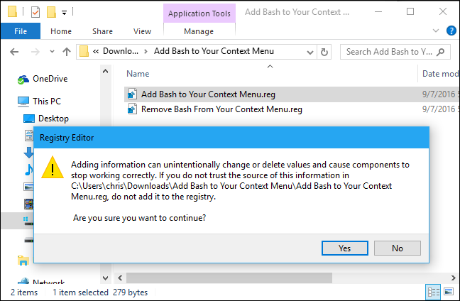
You should only add registry files from sources you trust. If you’re ever curious about what a .reg file does, you can right-click it in Windows and select “Edit” to inspect the .reg file and see exactly what information it will add or remove from your registry.
![]()
![]()
![]()
![]()
![]()
![]()
![]()
![]()
![]()

My laptop has 64bit Windows 10 HOME Anniversary update version 1607, build 14393.187 and the process you described does not give the results you described without further preparation. I had to first check Developer Mode and the option described in another article to load the beta subsystem. Perhaps this is because my laptop is 10 Home?